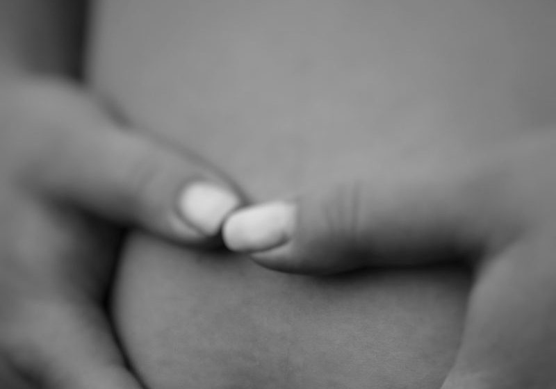
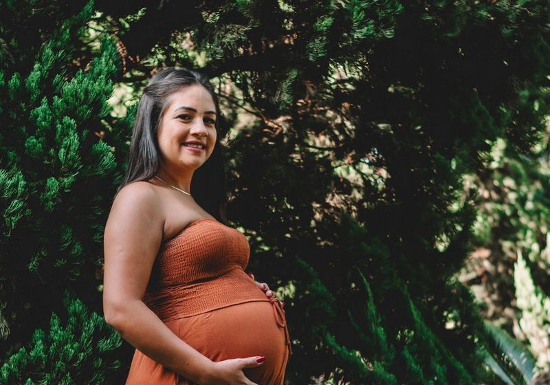

Robe d'allaitement : les 6 marques les plus pratiques au quotidien
Ouvertures, matières affichées et prix, de la robe à 25 € à la robe à 110 €.
Du troisième au neuvième mois, puis l'allaitement. Nous chiffrons le vestiaire complet au prix catalogue et nous dépouillons les avis clients sur le confort avant de classer les marques.
Kiabi, H&M Mama, Zara, Primark, Shein, Vertbaudet. Prix relevés, confort noté du 3e au 9e mois par un panel de 12 futures mamans, tenue après cinq lavages.


Ouvertures, matières affichées et prix, de la robe à 25 € à la robe à 110 €.
Bandeau bas, haut ou intégral, maintien et confort d'après les avis.
Un vestiaire complet par marque, prix relevés hors soldes.
Deux vestiaires complets chiffrés au prix catalogue, avis clients croisés.
Maintien, ouverture d'une main et tenue au lavage d'après les avis.
Sa taille habituelle ou une taille au-dessus, le tableau marque par marque.
Note globale sur 10 sur le seul univers grossesse. Le confort porté et le prix pèsent le plus lourd, un vestiaire de grossesse se porte six mois.
Voir la méthode de notation


Comparez deux marques de grossesse sur nos cinq critères en un clic.
Sur nos relevés 2026, Kiabi obtient la meilleure note globale (7,9/10) avec un vestiaire complet à moins de 150 € et des bandeaux confortables. H&M Mama suit à 7,6/10 avec la gamme la plus complète.
Chez Kiabi, H&M Mama et Vertbaudet, sa taille habituelle suffit, la coupe est prévue pour évoluer. Chez Zara et Shein, une taille au-dessus est plus sûre.
La majorité des futures mamans de notre panel ont basculé entre le 4e et le 5e mois, d'abord sur le jean, puis sur les hauts.
Cinq critères sur 10 : prix, qualité, fidélité des tailles, livraison et note globale pondérée, plus un critère confort porté propre à la grossesse.
Kiabi et Primark sont les deux options les plus économiques de notre panel, Kiabi gardant l'avantage sur le confort des bandeaux et la tenue au lavage.
Un email par semaine : le classement du mois, les nouveaux comparatifs et les vraies baisses de prix relevées en magasin.
Pas de publicité, désinscription en un clic.